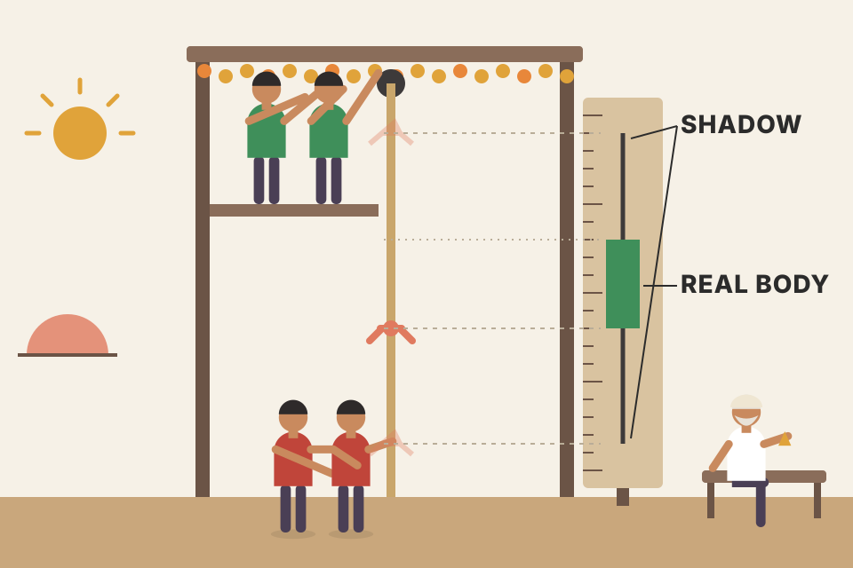
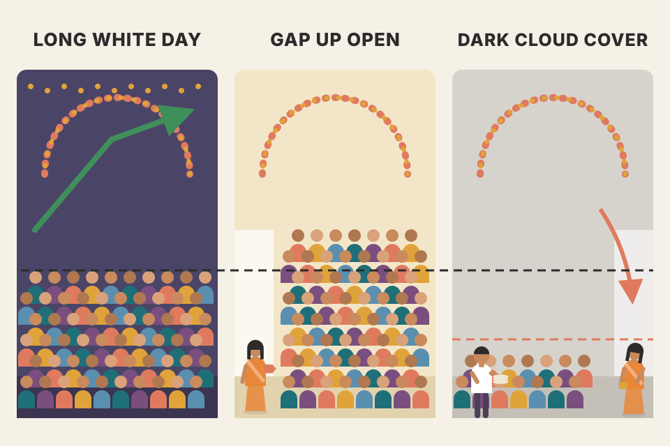
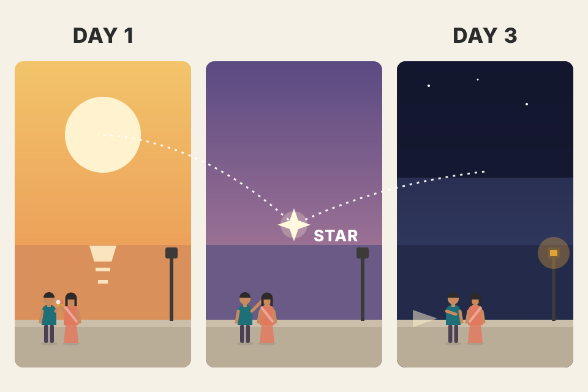
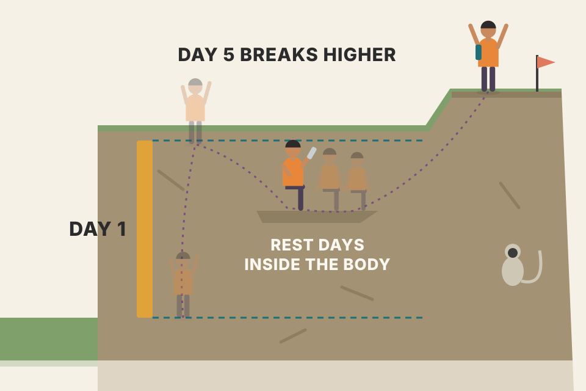

The chapter in plain words and in the book's order: how one candle is drawn from the same four prices as a bar, what each basic candle shape means, the few patterns the chapter explains step by step, the computer and filtering ideas, and the full library of 68 named patterns at the end. Murphy didn't write this chapter himself: a footnote says it was contributed by Gregory L. Morris. Every chart here is drawn from simulated prices, built to show one idea.
Two subjects share one name: a way of drawing prices, and the art of reading combinations of candles. The second sits on top of the first.
The Japanese have used candlesticks for centuries, but the West only picked them up recently (the book is from the late 1990s). The word "candlesticks" means two different but related things:
You can use either one alone, or both together.
Murphy hands this chapter to its contributor at the end of Chapter 11 (pdf p341): point and figure isn't the oldest charting method, he says; candlesticks, used in Japan for centuries, are. He introduces Greg Morris as the author of two books on candlesticks and notes the technique's new popularity among Western analysts.
The first subject is the alphabet; the second is reading words. You can write a letter in a new alphabet without knowing any words (just draw your charts as candles), or you can learn the words and look for them on any chart.
A candlestick chart uses exactly the data of a bar chart: open, high, low and close. Nothing new is added. The chapter's claim is that the candle form is more visually appealing and easier to read: information seems to jump off the screen. The name comes from the look: a rectangle with a thin line above and below, like a candle with a wick.
What matters is hollow = up day, filled = down day. (In dark mode the filled body is drawn in the light ink colour, so "black" candles look light.)
The chapter admits candles take some getting used to, but says that after a while you may prefer them.
The bar version draws the open as a tick to the left and the close as a tick to the right. A bar chart is a list of numbers; a candle chart is the same list with a highlighter run between open and close. Your eye no longer has to find two little ticks on each bar to know who won the day. The colour setting changes every candle on this page.
The body is the fight between the open and the close: who controlled the session from start to finish. A tall white body means buyers pushed all day; a tall black body means sellers did. The shadows show how far the price wandered and was pushed back. That's why the Japanese stress the body: it is the net result.
Day A: open 100, high 108, low 97, close 106. Close > open, so the body is white, from 100 up to 106 (6 points). Upper shadow = high − top of body = 108 − 106 = 2. Lower shadow = bottom of body − low = 100 − 97 = 3.
Day B: open 106, high 107, low 99, close 100. Close < open, so the body is black, from 106 down to 100 (6 points). Shadows: 107 − 106 = 1 on top, 100 − 99 = 1 below.
As bars, the two days look alike: vertical lines of length 11 and 8, with little ticks you have to compare. As candles, the eye sees at once that day B gave back all of day A's gain (same body size, opposite colour, body sitting in exactly the same 100–106 band). Same eight numbers; only the drawing changed.
Every charting platform (TradingView, your FYERS terminal) offers candles as a chart type, and most traders today use them by default, usually with green/red instead of hollow/filled. In code, a candle is just a row {open, high, low, close}; body = |close − open|, upper shadow = high − max(open, close), lower shadow = min(open, close) − low. Those three numbers are what every pattern rule later on this page is built from.
The Japanese defined a set of primary candles from how the open, high, low and close relate to each other; understanding them is where candle analysis begins (pdf p344). Different body and shadow combinations mean different things. The primary candles:
These single lines matter because every Japanese candle pattern is built from combinations of them. (Figure 12.5 also draws a plain flat dash, where open, high, low and close are all the same; the text doesn't name it.)
The chapter gives no numbers for "long", "small" or "almost equal". To make the classifier work I chose: the slider scale 0–100 stands for a market whose typical body is about 20 points; long day = body ≥ 30, short day = body ≤ 12; doji = body ≤ 5% of the day's range; gravestone/dragonfly = the missing shadow is ≤ 5% of the range and the other is ≥ 60%; spinning top = short body with both shadows longer than the body. Change them in your head and the names change too; that fuzziness is real.

Each day is a rope tug between buyers (pulling up) and sellers (pulling down). The shadows show how far each side dragged the rope during the day; the body shows where the rope ended compared with where it started. A doji is a draw. A gravestone is a day when buyers dragged the rope far up, then sellers dragged it all the way back.
Shadows are rejected prices. A long upper shadow means prices up there were tried and refused; a long lower shadow means low prices were refused. That's why the gravestone (refusal of high prices, close at the low) reads bearish and the dragonfly (refusal of low prices, close at the high) reads bullish.
Why the doji tolerance has to be relative (my reasoning, not the book's): suppose the smallest price step is 0.25. Open and close one step apart is a body of 0.25. On a day with a 2.00 range that's 12.5% of the range, a real (small) body. On a day with a 10.00 range it's 2.5%, and calling it a doji is fair. That's the chapter's point about markets that move in large steps: "equal" must mean "equal relative to the day's size".
The classifier this plate runs, trimmed to its core. Every vague word ("long", "small", "almost equal") has become a number you can see and change.
function classify(o, h, l, c) {
const range = h - l, body = Math.abs(c - o);
const upper = h - Math.max(o, c), lower = Math.min(o, c) - l;
if (body <= 0.05 * range) { // "almost equal"
if (lower <= 0.05 * range && upper >= 0.6 * range) return 'gravestone doji';
if (upper <= 0.05 * range && lower >= 0.6 * range) return 'dragonfly doji';
if (upper >= 0.3 * range && lower >= 0.3 * range) return 'long-legged doji';
return 'doji';
}
if (body <= SHORT && upper > body && lower > body) return 'spinning top';
return body >= LONG ? 'long day' : body <= SHORT ? 'short day' : 'medium';
} // SHORT = 12, LONG = 30 on this plate's 0–100 scale
On real data you would not use fixed points: compare the body with an average of recent bodies (or with ATR) so "long" adapts to the stock's normal size. The pattern scanner in section 10 does that with a 10-bar average body.
A candle pattern is a picture of traders' state of mind at that moment; it shows what they did as time unfolded. Why should it work? Because humans tend to react the same way in similar situations.
Flip every price around a line, here 100: new price = 200 − old price. That turns opens into opens and closes into closes, but swaps highs with lows, and white with black.
This is why the library (section 12) comes in pairs: one rule, flipped. The page's own pattern builders (sections 07 and 08) draw one side and get the other with the same kind of flip (new = 100 − old).
A single candle is one sentence of a conversation in the trading pit. A pattern is the whole exchange: "We're going higher!" (long white) — "Are we?" (small star) — "No." (long black). The words only mean something because the same exchanges keep repeating among people.
A reversal pattern is a combination of candles that normally signals the trend is turning. The big condition: you must look at the trend before the pattern. You cannot have a bullish reversal pattern in an uptrend. Candles that look exactly like the bullish pattern, but come after a rise, are not that pattern. Likewise, no bearish reversal pattern can appear in a downtrend.
That raises the age-old question: what is the trend? Volumes have been written about it, but the chapter says a moving average works quite well with candle patterns. Once the short-term trend (about ten periods) is known, candle patterns help a lot in spotting its reversal.
Japanese literature refers to about forty reversal patterns, from single candles up to five-candle patterns. Since many good references exist, the chapter discusses only a few popular ones (sections 06–07); the library in section 12 names the rest.
"Hammer shape" here = lower shadow at least 2× the body, upper shadow at most a quarter of the range, body at most a third of the range. "Downtrend" = the previous close is below the MA and the MA is lower than 3 bars earlier ("uptrend" the mirror). Both rules are mine; the chapter only says to use a moving average of about ten periods.
The same shape is a different word depending on the sentence it's in. A small body hanging off a long lower shadow after a fall is a hammer, the market hammering out a bottom. The identical candle after a rise is a hanging man, a warning. On the chart, green triangles are hammers, red are hanging men, and grey dots are the same shape with no clear trend, which the rule says to ignore. Drag the MA length and watch names flip.
A reversal needs something to reverse. The pattern only describes a shift in who's winning; whether that shift matters depends on who was winning before. That's why the chapter puts the trend check before the pattern, and why it reaches for a moving average, the tool built to answer "what's the trend?" mechanically.
Closes fall 2 points a day from 110 to a low of 92, then rise 2 a day. The 10-day simple average and this chart's rule ("uptrend" = close above the MA and the MA higher than 3 bars ago):
| day | close | 10-day SMA | trend by the rule |
|---|---|---|---|
| low | 92 | 101.0 | down |
| +1 | 94 | 99.4 | down (close still below MA) |
| +2 | 96 | 98.2 | down |
| +3 | 98 | 97.4 | unclear (close above, MA still falling) |
| +4 | 100 | 97.0 | unclear |
| +5 | 102 | 97.0 | unclear (MA still below 3 bars ago) |
| +6 | 104 | 97.4 | unclear (MA equal to 3 bars ago) |
| +7 | 106 | 98.2 | up |
A 10-bar simple average lags price by about (10 − 1) ÷ 2 = 4.5 bars, so the rule only says "uptrend" 7 bars and 14 points (15%) after the turn. Two consequences: a bullish pattern on days +1 or +2 still counts as coming "after a downtrend" (good), but a bearish pattern on day +5 is ignored because there's officially no uptrend yet. A shorter MA reacts faster but flips on noise; that's the same trade-off as Chapter 9's MA length. Drag the slider above and watch the grey "no clear trend" dots appear and disappear.
From here on the book's captions carry a sign: + means a bullish pattern, − a bearish one (Fig 12.6 is captioned "Dark cloud cover −", Fig 12.7 "Piercing line +"). The same signs label every drawing in the library (section 12).
Dark Cloud Cover is a two-day reversal pattern with only bearish meaning. Its bullish counterpart exists but has a different name (Piercing Line). Step by step, in an uptrend:
Piercing Line is the mirror, with bullish meaning. In a downtrend: day 1 is a long black candle that strengthens confidence in the downtrend. Day 2 opens at a new low, then trades higher all day and closes above the midpoint of day 1's body. That's a significant change in the bearish mood, and many reverse or exit their positions.

A party is in full swing (long white day). Next morning even more people arrive early (gap up above yesterday's high). Then, all day, guests quietly leave, until the room is emptier than halfway through last night's party. Everyone who arrived this morning is now losing, and they head for the exit.
The midpoint is the line in the sand. Closing below it means sellers didn't just stop the rise, they erased more than half of yesterday's gain. The higher the open and the deeper the close, the more traders are trapped on the wrong side. Slide the close to 30% and watch the pattern fail the test.
Uptrend. Day 1: O 100, H 111, L 99, C 110: a long white body of 10. Body midpoint = (100 + 110) ÷ 2 = 105.
Day 2: O 112, H 112.5, L 103.5, C 104.
Who is hurt: anyone who bought between 112 and the close is down up to 8 points, and buyers from day 1's second half (105–110) have lost their gain. That's the "pushes many to exit" in the text, in numbers.
The chapter gives no entry or stop. A common way to turn the pattern into a trade: sell at the next day's open, put the stop just above the pattern's highest price, and aim for a multiple of the risk.
The failure mode hiding here: because day 2 gapped above day 1's high, the pattern's own high is far from the close, so the protective stop is wide. Wide stop → small position for a fixed rupee risk, and a far target. Piercing Line has the same geometry upside down. The trade lab in section 10 uses exactly this stop rule so you can see what it does over hundreds of simulated trades.
The Evening Star and its cousin the Morning Star are two powerful three-day reversal patterns that, the chapter says, work exceptionally well. It explains the Evening Star (bearish); the Morning Star is the opposite.
That is the perfect scenario. Many references accept an Evening Star that misses a detail: day 3 may not gap down, or its close may not get quite below day 1's midpoint. Judging that by eye is subjective. A computer can't judge; it needs explicit rules and allows no interpretation.
The chapter names only the two allowed misses (no gap on day 3; close not quite past the midpoint). My lenient checker still demands day 1 long, a gapped star, and a day-3 close at least inside day 1's body. Untick boxes to see where strict and lenient disagree.

Evening: the sun (day 1) is high, a small star appears above the horizon line (day 2), then darkness falls (day 3). The star is a pause: buyers gapped prices up but couldn't push further, and sellers couldn't push down either. Day 3 says the pause ended in the sellers' favour.
The chapter's real lesson is about definitions. Every "flexible" rule a human uses must become a hard yes/no for software. Loosen it and you catch more patterns, including weaker ones; tighten it and you catch fewer, better ones. Section 09 comes back to computers.
The mechanism in numbers: every trade on the star day happened between 112 and 115. Day 3 opens at 111, already below all of them, so every star-day buyer is losing from the first minute, and by the close they're down 8 to 11. The gap is what makes the trap complete. If day 3 had opened at 114 instead (no gap), some star-day buyers would still be in profit at the open, and the pressure to sell builds more slowly; that's why the strict rule wants the gap and the lenient rule lets it go.
Every trading day you decide: exit, enter, or stay in. A pattern that says "the trend will continue" is more valuable than it first looks, because it answers "should I stay in?". Japanese literature refers to 16 continuation patterns. One pair is particularly good: the Rising and Falling Three Methods.
Like reversal patterns, they depend on the trend: a bullish continuation pattern can only occur in an uptrend, a bearish one only in a downtrend. The Rising Three Methods (bullish), the perfect version:
A five-day pattern needs a lot of detail to define. With experience, some flexibility works: the small days may stay within day 1's high–low range instead of its body; they don't always have to be mostly black; and the rest can last more than three days. The chapter's advice: don't ignore this pattern; it can be a comfort when you're worried about protecting profits in a trade.

A hiker climbs hard (day 1), sits on a ledge for a few minutes, even shuffling back a little (rest days), then climbs past the previous high point (day 5). The ledge never drops below where the climb started that morning; that's what "inside day 1's body" protects.
The rest days are profit-taking that fails to undo the big day. Sellers had three sessions to push below day 1's open and couldn't. When day 5 closes at a new high, the sellers' attempt is officially over. It is a tiny version of a bull flag: a pause against the trend, inside a boundary, then a breakout.
| day | open | high | low | close | check |
|---|---|---|---|---|---|
| 1 | 100 | 111 | 99 | 110 | long white; body 100–110 |
| 2 | 109.5 | 110 | 106.5 | 107 | small black, inside 100–110 ✓ |
| 3 | 107 | 108.5 | 106 | 108 | small white, inside ✓ |
| 4 | 108 | 108.5 | 104.5 | 105 | small black, inside ✓ (2 of 3 black ✓) |
| 5 | 105.5 | 113.5 | 105 | 113 | long white, close 113 > 111 = new high ✓ |
Sellers had three sessions and got price only from 110 to 105, half of day 1's body. The lowest rest-day low (104.5) never reached day 1's open (100). How a trader might use it (beyond the book): if you're already long from below 100, the pattern says "stay in"; a natural place to tighten the stop is under the rest days' low (104.5) or under day 1's low (99), because a close back below those would mean the rest turned into a real reversal.
Software that recognises candle patterns is a great way to remove emotion, especially during a trade. The chapter says there are a couple of things to keep in mind when viewing candles on a screen, but explains only one: pixels. A screen is made of a limited number of pixels (how many depends on your video card and monitor). If the chart squeezes a large price range into a short time window, each pixel stands for a range of prices. Small bodies then collapse to a single line, and you think you see many doji (open = close) when there are none. Software that identifies patterns from the numbers, not the picture, isn't fooled. So if your software doesn't flag "doji" you can see, it isn't broken.
A ruler marked only in whole centimetres: anything shorter than a centimetre reads as zero. Squeeze ten years of prices onto one screen and a ₹2 body is far smaller than one pixel step, so it's drawn as a flat line. Push both sliders and count the "doji" multiply while the true count doesn't move.
The screen rounds every price to the nearest pixel row. Price per row = (price range shown) ÷ (rows). Any body smaller than that rounds to zero height. The chart here simulates that rounding; a pattern scanner compares open and close as numbers, so it never sees the rounding.
The readout under the chart uses exactly this test: a body looks like a doji when it's under half a row.
A scanner reads numbers, so every flexible word in sections 06–07 must become a test. This is the Dark Cloud Cover / Piercing Line part of the scanner used in section 10 (trend is +1 up, −1 down, 0 unclear, from the 10-bar MA rule in section 05; avgBody is the mean body of the last 10 bars).
// i = day 2, a = day 1
const white = (j) => c[j] > o[j], black = (j) => c[j] < o[j];
const body = (j) => Math.abs(c[j] - o[j]);
const mid = (o[a] + c[a]) / 2; // midpoint of day-1 body
const long1 = body(a) > avgBody(i, 10); // "long" = bigger than usual
if (trend(a - 1) > 0 && white(a) && long1 && black(i)
&& o[i] > h[a] // opens above day-1 high
&& c[i] < mid && c[i] > o[a]) // closes inside, below mid
found('Dark Cloud Cover', -1);
if (trend(a - 1) < 0 && black(a) && long1 && white(i)
&& o[i] < l[a] // opens at a new low
&& c[i] > mid && c[i] < o[a]) // closes inside, above mid
found('Piercing Line', +1);
Two choices here are mine, not the book's: "long" means bigger than the recent average body, and day 2 must close inside day 1's body (if it closed beyond it, it would be an Engulfing instead, which the scanner checks first).
Candle pattern filtering, developed by Greg Morris in 1991, is a simple way to improve the reliability of candle patterns. You still must know the short-term trend before a pattern can exist. On top of that, you check whether the market is overbought or oversold using a traditional indicator. This improves a pattern's predictive power and helps throw out bad or premature patterns.
Before applying any filter, the chapter says, you must first understand how the indicator itself responds to prices; that's why it spells out %D's own signals above. The book's Figure 12.12 is a real chart of 3Com Corp (COMS) from 13 June to 28 August 1996 (daily, judging by its date axis: weekly ticks about five candles apart; the text doesn't say), with %D in a panel below. In the late-July low it marks a Piercing Line forming while %D sits in its presignal buy area below 20; later, in August, %D climbs into the presignal sell area above 80. The chart below recreates the mechanics on simulated prices.
%K = where today's close sits in the last 14 bars' high–low range; %D = 3-bar average of %K (my settings). The pattern detector looks for simplified Hammer/Hanging Man, Engulfing, Piercing Line/Dark Cloud Cover and Morning/Evening Star (my rules, trend from a 10-bar MA). Bullish patterns are kept only below 20, bearish only above 80, following the figure's labels. The "next 5 bars agreed" number is on random simulated prices, which have no crowd psychology, and they contain trending stretches that persist by construction, so reversal patterns often agree less than half the time here, with or without the filter. This shows how the filter works, not whether it works.
A smoke alarm (the candle pattern) that goes off whenever someone makes toast is useless. Wire it so it only sounds when the room is also hot (the oscillator at an extreme) and false alarms drop. The filter doesn't make the alarm smarter; it just ignores it in rooms that aren't hot.
An oscillator at an extreme says the move is stretched. A reversal pattern says the crowd is changing its mind. Each alone fires too often; requiring both cuts the count sharply (compare the readout with the filter on and off). And because %D in its presignal area hasn't yet signalled, the candle pattern often arrives first: the readout's "lead" counts how many bars before %D's own signal each kept pattern came.
%K (standard construction, Chapter 10): where today's close sits inside the last 14 days' range. Highest high 120, lowest low 100, close 104 → %K = (104 − 100) ÷ (120 − 100) × 100 = 20. %D = the average of the last three %K values.
| day | %K | %D = avg of last 3 %K | meaning |
|---|---|---|---|
| 1 | 20 | — | |
| 2 | 15 | — | |
| 3 | 10 | 15.0 | below 20: presignal buy area |
| 4 | 25 | 16.7 | still in the area |
| 5 | 35 | 23.3 | %D rises back above 20: %D's own buy signal |
A Piercing Line completing on day 3 or 4 is kept (%D under 20) and arrives 1–2 days before %D's own signal on day 5. The identical Piercing Line on a day when %D reads 65 is ignored. Note what %D is measuring: "the close is near the bottom of its recent range". That's a stretched market, which is the setting where a reversal story makes sense.
The chapter stops at "the pattern is valid". To test anything you need a full trade, so I added the commonest simple plan: enter at the open of the bar after the pattern completes, in the pattern's direction; stop just beyond the pattern's own extreme (lowest low of its bars for a bullish pattern, highest high for a bearish one); target at the chosen multiple of the risk; if neither is hit, exit at the close after the time limit. If a bar opens beyond the stop or target (a gap), the fill is that open. If one bar touches both stop and target, I count the stop (the pessimistic choice, since daily bars don't tell you which came first). Patterns whose stop would sit less than 0.3% from the entry are skipped (and so are those where the next open is already past the stop): with stops that tight, costs and small gaps alone produce losses of several R and swamp everything else. Cost is a percentage of price per round trip (10 bp = 0.10%), converted into R. Results are in R: profit ÷ the risk you took, so +2R means you made twice what you risked. The step-through uses the patterns on the chart above (only kept ones when the filter box is ticked).
Each row is the same trade plan applied to a different set of entries, over 150 simulated markets (their shapes follow the chart above: a fall, a range, a rise, a fall, each with random noise; the set changes with "Roll a new market"). All patterns: every reversal the scanner finds. Filtered: only those with %D beyond 20/80, Morris's rule. Random entries: for every pattern trade, a random bar in the same market traded in the same direction with the same stop distance (as a % of price): the control group. A pattern only shows an edge if it beats its own random control.
Two things are built in by the rules, not discovered: with a 2R target, a trade with no edge wins about 1 time in 3, because the target is twice as far as the stop (in general about 1 ÷ (1 + R)); and costs push every row a little below zero. So a win rate near 33% at 2R is "no edge", not "bad pattern". These simulated prices contain trend stretches (built-in drift) and no crowd psychology, so reversal patterns here have nothing real to detect, and trading against a drifting stretch can lose. In the seeds I checked, the patterns did a little worse than their random control and the filtered row worse than the unfiltered one. That fits the simulation, not Morris: here trends persist by construction, and %D sits beyond 20/80 mostly inside such persistent stretches, so the filter picks exactly the pinned cases below. This table shows what no edge looks like and how a test is built. It is not evidence for or against Morris's filter. The real test needs real prices.
TradingView ships ready-made candlestick-pattern indicators, and in Pine Script you can write the pattern test yourself (predicates like those in section 09) next to the built-in stochastic, so Morris's rule is a short strategy: longCondition = bullishPattern and ta.sma(ta.stoch(close, high, low, 14), 3) < 20, with the stop and target plan above. The honest way to evaluate it is the one in the table: compare against random entries with the same stops, on many symbols, with costs, and keep some data aside you didn't tune on.
stoch_rsi_macd_strategy.md tried two cousins of this idea on Nifty 50/200. First run: requiring the Stoch RSI cross to come from below 20 / above 80 is listed under "didn't help". Final rules: buy only when not overbought (both lines ≤ 80), sell only when not oversold (≥ 20); that re-test lost on Nifty 50 on every timeframe/side/mode except 2 of 168 versions (backtest_results_summary.md). Both filtered Stoch RSI crosses, not candle patterns; Morris's exact rule (a reversal candle pattern while %D is already beyond 20 or 80) hasn't been tested on your data.The chapter's closing view: candlestick charting and candle pattern analysis are essential tools for market timing. Use candle patterns the way you use any technical tool: to study the psychology of market participants. Once you're used to seeing charts as candles, you may never want bar charts again. Its strongest claim: candle patterns used with other indicators in the filtering concept will almost always give a trading signal before other price-based indicators do.
"Earlier" is plausible for a structural reason: a pattern needs 1–5 bars, while an oscillator or moving average needs many bars of data to turn. But earlier is not the same as more accurate; the chapter states the claim without test results.
The trade lab in section 10 measures the timing half of the claim: for every kept pattern it counts the bars until %D gives its own signal (crossing back out of the 20 or 80 zone). Over the 150 simulated markets the kept pattern typically came about 5–6 bars before %D's signal in the seeds I checked (the readout under the pooled table shows the live number). So "earlier" holds mechanically, for the structural reason above. The same table shows the other half: on those prices, arriving earlier did not make the trades profitable. Timing and accuracy are separate questions, and the chapter only gives evidence-free claims for both.
backtest_results_summary.md). Candles helped as a filter; they didn't create an edge on their own.intraday_swing_playbook.md), the same "pattern + context" idea.The chapter ends with the library used to identify candle signals (pdf p354). The number after each name is how many candles define it. It's split into bullish and bearish, reversal and continuation: 26 bullish reversals, 26 bearish reversals, 8 bullish and 8 bearish continuations. The 16 continuation entries match the 16 continuation patterns of section 08. The text's "about forty" reversal patterns doesn't match the 52 reversal entries; the book doesn't reconcile the two. My own count (not in the book): ten names appear on both sides (Belt Hold, Engulfing, Harami, Harami Cross, Doji Star, Meeting Lines, Abandoned Baby, Tri-Star, Breakaway, Kicking), so the reversal list holds 42 distinct names, close to "about forty", while the 16 continuations count bullish and bearish separately. As in Figures 12.6–12.11, each drawing's caption ends in + (bullish) or − (bearish). The next pages (pdf p355–364; p357, p358 and p359 are three scans of the same printed page) draw almost every one; the gallery below redraws each from OHLC numbers I constructed to match those drawings.
The chapter defines only the patterns in sections 03 and 06–08; the rest are just a name and a drawing. The definition shown when you click a card is the standard one (as in Nison's book and Morris's own work), not Murphy's text; cards marked "in text" are explained in this chapter. Nison: hammer/hanging man/engulfing/dark cloud/piercing ch.4 (pdf p42) · stars, shooting star, inverted hammer ch.5 (pdf p71) · harami, belt-hold, three crows/soldiers ch.6 (pdf p90) · tasuki, three methods ch.7 (pdf p134) · doji ch.8 (pdf p163).
A phrasebook at the back of a language course. You don't memorise all 68; you learn the alphabet (section 03), the grammar rule "check the trend first" (section 05), and a handful of common phrases (06–08). The rest you look up when you meet them.
Suppose none of the 68 patterns has any edge, and you test each one on the same data at the usual 5% significance level. By luck alone you should expect about 68 × 0.05 ≈ 3 or 4 patterns to look "significant". The more patterns (and the more settings per pattern) you try, the more certain it is that some will look good by accident. That's the multiple-comparisons problem, and it's the main reason candle-pattern backtests disagree with each other. The defences: decide the few patterns you'll test before looking, test on data you didn't tune on, and compare against a random-entry control like the one in section 10.
Click "Engulfing Pattern +" in the gallery. The drawing shows three thin lead-in lines falling (the prior downtrend the pattern needs), then day 1: O 52, H 54, L 44, C 46 (a black body 46–52) and day 2: O 42, H 58, L 41, C 56 (a white body 42–56 that covers all of 46–52). The "+" says bullish; the "2" says two candles define it; "bullish reversal" is its group; pdf p355 is where the book draws it. Then apply section 05 yourself: only if your own trend check says "downtrend" before day 1 is this an Engulfing at all. Body sizes are 6 then 14, so day 2 is more than twice day 1, which is why it reads as a strong shift.
The close was above the open (a "white" day). The body is drawn hollow so it prints well; the Japanese colour it red (section 02).
No. Long and short days are about the body only: the distance between open and close (section 03).
Gravestone: a long upper shadow and no lower shadow, so high prices were tried and rejected and it closed at the low. The longer the upper shadow, the more bearish (section 03).
It isn't a Piercing Line at all. A bullish reversal pattern can't occur in an uptrend; establish the trend first, for example with a ~10-period moving average (section 05).
Open above day 1's high; close at least below the midpoint of day 1's long white body (section 06).
It has a small body and gaps away from the long body of day 1 (section 07).
By eye, a missing gap or a close just short of the midpoint can be "accepted". Software needs explicit rules and allows no interpretation (section 07).
Perfect: three small days staying within day 1's body, at least two of them black. Flexible: within day 1's high–low range, not mostly black, more than three rest days (section 08).
Probably the scanner. With a large price range per pixel, small bodies round to a flat line (section 09).
Ignore it. Patterns count only when %D is in its presignal area (above 80 or below 20), and only reversal patterns are filtered this way (section 10).
16: eight bullish and eight bearish, mostly mirror pairs with the same name (sections 08 and 12).
Not the perfect version, which keeps the rest days inside day 1's body. The chapter allows, with experience, rest days that stay within day 1's high–low range instead (section 08).
A stop just above the pattern's high sits far from the close-based entry (8.5 points in section 06's example, against a 10-point day-1 body). A wide stop means a small position for a fixed rupee risk, and a 2R target lies far away. Gap patterns have this geometry built in (sections 06 and 10).
A 10-bar SMA lags by about 4.5 bars; in section 05's example the rule says "up" only 7 bars after the low. Until then the trend is "unclear", so a bearish reversal pattern in those bars is ignored because there's no uptrend for it to reverse.
Neither, yet. With a 2R target, a trade with no edge wins about 1 in 3 (1 ÷ (1 + R)), so 34% is roughly "no edge" before costs. Compare it with random entries using the same direction and stop distance on the same data (the control row in section 10), and judge on R after costs, not on win rate.